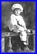
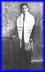

U S of America scroll down and/or click thumbnails for larger photos
Alex & Sophie
Alex & Sophie
Israel & Alex & family
Sophie
Alex, Seymour & Ira
Alex & Sophie
Alex & Albert
Alex, Sophie & Régine
Albert, Régine & Sophie
Alexe, Sophie & Régine
Sophie
Alex & Sophie
Sophie
Alex & Soihie
Sophie & Roony
Alex @the Tancermans
Alex & Albert & Sophie
Albert & Sophie
Alex & Sophie
Sophie & the Brocauds
Alex & Sophie
Eugene & Millicent
Seymour & Minnie

Seymour 1921

Seymour 1931
Seymour 1946
Norman & Allen